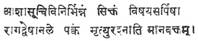
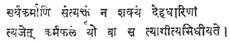

REVIEWS
The Indian National Movement: D. C. Gupta. Vikas Publications,
This
is a political history of modern
The
subsequent chapters deal with the genesis and growth of Indian Nationalism and
of the Indian National Congress, and the Surat split,
including an account of the growth of Muslim communalism, “which doubtless was
welcomed by the British both in India and England,” though it may be argued
that they did not actively promote it. The impact of the I World War on Indian
politics, the N. C. O. Movement, the work of the Swaraj
Party and the communal question which bedevilled
Indian politics are the themes of subsequent chapters. The long-drawn out
negotiations, which formed the prelude to the British dividing and quitting
India are briefly and lucidly narrated, as also the heroic efforts made by Subash Chandra Bose to secure foreign help to drive out the
British.
There
will be general agreement with what the author says towards the end of the book
that the British decision to quit
A
few errors which have crept into a book so well-written and documented may be
pointed out. Sri Ramakrishna was born in 1836 (not in 1834) and was not
descended from Chaitanya (p.24). W. E. Gladstone does
not seem to have attended the Madras Congress of 1887 as mentioned (p. 40). No
no-tax campaign was inaugurated in
It
is a book which ought to find a place in the school and college libraries of
–K. SAMPATHGIRI RAO
Coins of
The
present volume is a reprint of the nearly century old monumental work by Sir
Walter Elliot.
Indian
historical research, and especially epigraphy and numismatics, owe an eternal
debt of gratitude to such stalwarts like Prinsep (who
read the Brahmi script), Elliot, Dr. Fleet, etc.,
who, working in a different country under difficult conditions, did so much to
reconstruct our historical knowledge.
Sir
Walter Elliot, during his days as a civil servant, in the old Madras
Presidency, collected a great deal of information about the ancient history of
The
present book gives also details of the coins of several South Indian dynasties
like the Chalukyas, the Rashtrakutas, the Yadavas, etc.
Much
of the historical matter given in this volume has had to be recast in view of
the phenomenal progress made in historical research in
The
present book has, therefore, got mainly an antiquarian value, in as much as it
reproduces the work done by a stalwart, against very heavy odds, nearly a
hundred years ago, when modern methods of research and other technical
accessories were not available.
It
is a tribute to the greatness of the genius of Sir Walter Elliot, that this
book, in spite of its being out-of-date by nearly a hundred years, contains in
core and in essence, a correct estimate of the numismatic history of
–N. RAMESAN
Burial Practices in Ancient
The
present book is a very valuable study in depth, on the burial practices in ancient
The
author has summarised the available knowledge before
1945, when modern archaeological methods were introduced in
The
megalithic burial practices, when the introduction of iron as the principal
tool for weapons and household utensils in the first few centuries of the first
millennium B. C., introduced many radical changes in the life of early man,
have been dealt with, in very great and elaborate detail. This is as it should
be, since the origin, chronology, and evolution of the megalithic burials is
one of those unsolved problems of Indian archaeology, which has been seriously
agitating the minds of scholars and students. The megaliths of Andhra Pradesh, Tamilnadu,
Of
particular interest and importance is the last but one chapter, where the
author has reviewed the practices regarding the disposal of the dead among the
tribal people of
The
author has with commendable modesty stated that the remarks of Sir Martiner Wheeler made elsewhere, would be equally
applicable to the present work, viz., “A dozen years ago, it could not have
been written; a dozen years hence it will have to be re-written.” In view of
the fast pace at which new evidences are accumulating every year, a review of
our knowledge of ancient burial practices in the next 10 to 15 years would become
inevitable. If so, Dr. Purushotham Singh would rank
as a leading scholar who has contributed a great deal for a
knowledge of this difficult subject.
–N. RAMESAN
Sages, Saints and Arunachala
Ramana: By Bhagavan Priya M. F. Taleyarkhan.
Orient Longman, Madras-2. Price: Rs.
15.
In
times when we are having biographies and reminiscences mostly of politicians
and publisists of rank, it is somewhat unusual to come
upon an autobiography of a person who has been out and out a seeker of
spiritual solace in the midst of a life which could have been spent really for
other ambitions. Mrs. Taleyarkhan has been a
well-known devotee of Bhagavan Ramana
Maharshi and her high-society associations are quite
attractive in themselves for filling the page of a book of recollections.
Still, she has not shown any lukewarmness or
indifference to what she claims as her legitimate career of purposefulness.
The episodes and experiences of a woman, who, despite a comfortable home and a
loving spouse, had chosen a path of fulfilment in
doing penances and living austerely, and throwing her lot with every kind of
being in the social hierarchy, ranging from an outcaste to the Ruler of a
In
the first few chapters we are supplied with her antecedents and her early
proclivities to a life of spirituality and service. It reads like a romance to
find her going the unusual way for doing penance at Buddha Gaya
under the Bodhi tree. The days of her striving to get
light and her final choice of a Master in Ramana Maharshi are narrated with sufficient sense of proportion
and selection of details.
No
doubt there are incidents which we have to accept as miracles, and far from
treating them with scepticism and disbelief which
normally in our growing materialistic outlook we may be tempted to do, the
insignia of sincerity and faith in the narration keeps us bound to the pages
with an avidity that is almost akin to what we realise
when reading a high class hagiology. She has enabled us to visualise
the necessary background for a devotee of saints such as Ramana
and Sri Anand Mayi, and her steadfastness in the
pursuit of their bountious grace in order to make her
own life entirely unsophisticated and serviceable to humanity.
In
between we have a lot of details and accounts of the many other types of people
with whom she had inevitably come into contact owing to her earlier upbringing
in affluent circumstances. On the whole the book of nearly two hundred and
fifty odd pages of easy narration with an appendix containing important
documents and letters is a valuable addition to the literature of hagiography.
The foreword of the late Sri Sir Prakasa
and of Dr. Radhakrishnan confirm the significance that we can attach to
a book of this kind.
–K. CHANDRASEKHARAN
Vallothol Kavitaigal
(Poems
of Vallothol): Translated by Thuraivan.
Published by the Sahitya Akademi,
The
Sahitya Akademi has really done a service to other
parts of
Here
are some of the choice selections from the mass of his writing. ‘Thuraivan’ who is an accredited poet himself, has enabled
the Tamil-knowing people to have a peep into the rich mine of Vallothol’s thought. His ‘Mariam Maddalan’ has already come out in the English garb. It has
earned the legitimate appreciation due to it in its original. ‘Babu’, describing the tragic end of Gandhiji is a moving
poem which read, even after more than a quarter of a century, revives in the
reader’s heart the same poignancy of feelings as at the time when it was
written. Seventeen of the poet’s unfading poetic blooms are thus gathered here
in a beautiful bouquet worthy to be presented to a generation that is fast
becoming outmoded in its tastes and sympathies.
The
introduction to the volume by Sardar K. M. Panikkar adds considerably to the interest it even
otherwise can generate in readers.
–K. CHANDRASEKHARAN
The Whole Man: Body, Mind and Spirit: Roscoe Van Nuye. Philosophical Library,
The
volume under review is a rare kind of book. It is the picture of human life and
the relation between Mind, Spirit and Body as revealed to the sub-conscious
mind of a veteran retired radiologist. The author’s conceptions make a
departure from the traditional formats. According to the interpretation of Mr.
Roscoe Van we are all meant to create and be independent adventurers in God’s maelstrom
of creation. The account stimulates in the reader self-appreciation and
spiritual development. He stands for the philosophy change and has affinities
to Bergson. He advocates radical changes in the
environment of men. His appeal to the youth of the world is remarkable.
He asks them to be revolutionary in a constructive way with purposive and
considered objectives. He is against all forms of irrational destructive
violence without any good goals in view.
The
three parts of the whole man are body, mind and spirit and our
author does not neglect any of them and pays its due. The importance of the sub-conscious
mind is emphasised as the potential instrument to
contact the all-pervasive essence God. His remarks of the spirit and its
functions are significant and informing. The volume is a fine collection of
deep reflections on topics that are related to life. It is full of wisdom and
simple argument. The large number of evils such as wars, violence, human
cupidity and cussedness are all analysed into its
components and their actions are described. In short it is an excellent book of
spiritual musings.
–Dr. P. NAGARAJA RAO
A Philosophy of Man and Society: Forrest H. Peterson.
Philosophical Library,
The
author who at present is the Chairman and the Head of the Department of
Philosophy in Southern Connecticut State College in
The
book goes into eleven neat chapters covering a very wide field of human
activity. The different current ideologies are examined, e.g., Marx’s dialectic
theory, Hegel’s Logic, social contract theories and their pros and cons are
disclosed. There is an interesting note on the role of a teacher in society and
his place. A list of duties of the teacher is set forth under the title “Norms
for professional conduct (213-222). There is a masterly analysis of the
role of freedom and education which needs special study. Unlike technical
treatises on philosophy, the book avoids both the types of obscurities, i.e.,
obscurity of idea and obscurity of expression, by its clarity and easy style.
Reading the book is liberal education in the art and the science.
–Dr. P. NAGARAJA RAO
The Vanishing Empire: Edited by Chaman Lal. Sagar Publications, 72 Janapath,
The
Law of Karma inexorably works in the life of a nation, as it does in the life
of an individual. This axiom is best illustrated in Lal’s
“The Vanishing Empire”. The British hegemony over
In
the chapter “Glorious Ind” the reader is feted with a
dazzling vision of hoary India and a formidable catalogue of references to God,
Max Mueller, Hereen and a host of other celebrities,
in testimony of India’s mighty past and its cultural conquests of foreign lands
to wit: S. E. Asia, America and Syria. It is a truism that the rule of one
nation over another is, according to Abe Lincoln, a tyranny. And may be, an abnormality too. Imperialism can project a democratic
image and radiate a benevolent look. But its tooth and claw are ever red.
Chapters
III to X make a nice and edifying study of intolerable and autocratic
governance of the Britishers in the costly civil
service, the expensive army, heavy taxation, an educational structure unrelated
to the needs of the country, a judicial system biased in favour
of the colonisers, an impoverished rural India, devitalising famines and indigenous industries destroyed to
the utter ruination of the countryside.
The
saying goes that one can fool some people sometime, and he cannot fool all the
people all the time. Likewise brave beginnings have ill-endings. And
high-pitched tonic trails away into a disenchanting flat.
In
the chapter “Britain Exposed” are related the awakening of the sophisticated
elite and dumb millions to the stern realities of the British Rule from their
slumberous depths and their massive non-violent protest against the silk-gloved
white domination.
Chapters
XII to XV deal with the independence struggle, the enormities perpetrated by
the military regime on innocent souls, blood-curdling sacrifices, made by the
sons and daughters of India, press censorship and brutal legislative measures,
of the Britishers, to suppress the Movement, and
bleed the victim white, never to allow it rise and strike back.
But
fortunately the tables were turned on White Neras. As
Gandhiji prophesied,
The
book “Vanishing Empire” depicts the struggle of man against oppression and
tyranny and will be read by all who love liberty and abhor bondage.
–K. SUBBA RAO
Discovering Indian
Sculpture: Charles
Fabri. Affiliated East-West Press, Pvt., Ltd.,
Sculpture
cannot be appreciated by everybody so easily as the painting, for the former is
devoid of colour and the illusion of realistic
perspective. Especially Indian sculpture has got its own conventions, styles,
mannerisms and psychological implications, which Dr. Charles Fabri had made explicit in this book. The special feature
of this book reveals itself in the fact that the number of the illustrated
pages is greater than that of the pages containing the text.
Late
Dr. Fabri was a celebrated art-historian, critic,
connoisseur, scholar and linguist knowing English, French, German, Dutch,
Italian, Spanish, Sanskrit and Persian. He had specialised
in the study of Indian art. His approach to Indian Sculpture is plastic and
aesthetic, rather than religious and esoteric; form is more essential than the
theme in works of plastic arts; he belongs to this conviction. He did not
believe in the purity of any country’s art without having been influenced by
the arts of the other countries. Yet, he was of the opinion that Indian
sculpture had hardly got any trace of foreign influence, except some Irani influence in the beginning and later some Hellenistic
influence. Dr. Fabri begins his text with the
following:
“Indian
sculpture has a history of more than two thousand years. During these two millenia there have been changes. Each period, each century
shows a change in taste, in manner, in style. The history of these changes in
style and manner is, in fact, the history of art. It makes history fascinating.
Indeed it is far more interesting than asking what a piece of sculpture
represents.....You will be missing all the beauty and the fascination if you
are only interested in the theme, in the subject-matter of a work of
art.” This denotes Dr. Fabri’s approach to Indian
sculpture.
Dr.
Fabri’s book under review is thin in size and yet
vast in content; its quality is greater than its quantity; it is intensive
rather than extensive. Some of the photographs of the sculptures reproduced in
this lovely volume have been taken by Dr. Fabri
himself. Dr. Fabri is a pure formalist and that was
why he emphasised:
“This
is style–style that is different in every age and always changes. This book
deals with the styles of Indian art history. It does not deal with religious
beliefs and mythology. In other words, we deal with the beauty of sculpture,
the way each generation expresses itself in artistic creation.”
Indian
sculpture has often been interpreted in two ways–erotic and esoteric, ignoring
the aesthetic one. That was why Dr. Fabri had chosen
the neglected phase of Indian sculpture. Indian sculpture is not
spiritual nor Western sculpture profane. Indian sculpture is both
spiritual and profane in the same way as Western sculpture is both spiritual
and profane. Art is primarily aesthetic and other aspects are secondary.
Dr.
Fabri says that until the third century B. C. there
was very little Indian sculpture. Wood and ivory and also terra-cotta precede
stone in Indian sculpture. In the third century B.C. during Emperor Asoka’s reign stone images began to be chilled by Indian
sculptors. Asoka ordered to erect stone pillars at
various significant places “where many people gathered and had his masons
inscribe on those pillars imperial orders: asking officials to be kind and just
to his people; to follow the teachings of the Buddha; to help the poor, the old
and the sick; to make good roads; and other useful instructions.”
Emperor
Asoka imported from
The
author was very meticulous in tracing the origins of various phases of Indian
sculpture. Sculpture is generally found in two phases–round sculpture and
relief sculpture. The early Indian sculptors deemed it unnecessary to toil with
the large stones for making the round sculptures. People view any sculpture
from the front and not from the back; this conception gave birth to relief
sculpture which contains the front side of the figures alone, eliminating the
back portion. Dr. Fabri says, “With the rarest
exceptions most Indian sculpture is relievo
carving and not sculpture in the round.” The earlier relief
sculpture of “A Yakshi and a Yaksha”
from Bharhut has been beautifully reproduced in this
book.
In
Indian art the classical stage arrived in the 4th and the 5th centuries. ‘Classical’
means not only to depict the theme in a masterly manner but also to create
beauty in the execution of form. During these two centuries the sculptor had
turned the inanimate stone into an animate enhancement! One of the examples of
these classical creations of this period is a sensitively modeled stucco relief
figure of a Nagini from
The
Classical sculptures belonging to these two centuries have been veritable
embodiments of peace, harmony and joy. No mental aberrations could find
expression in these charming creations of stone; these sculptures are free from
superfluous ornamentation and, spurious mannerisms, “This finest hour of
Indian art is comparable to the best sculpture made anywhere in the world, at
any time.”
The
art history of
One
of the most glorious periods of Indian sculpture has been the Andhra Satavahana reign. The finest Indian sculpture of Buddhistic themes was made in Amaravati
during that period. Amaravati sculptures are indeed
poems in stones! The graceful curved line of vivant rhythm has nowhere found finer
expression than in the sculptures of Amaravati. Next
to Amaravati come the enchanting sculptures of Nagarjunakonda of the Ikshwaku period.
Nagarjunakonda sculptures have got greater aesthetic
appeal than those of Amaravati. Sculptures of Amaravati are epical while those of Nagarjunakonda
are lyrical. All these schools of Indian sculpture have aptly been dealt with
by Dr. Charles Fabri in his book under review.
The
Indian art history has a distinctive chapter of South Indian bronzes with their
special approach to sculpture and Mr. Fabri has
vividly dealt with these South Indian bronzes in this book.
The
book is exquisitely produced with critical text and creative plates containing
almost all examples of every
Dr.
Charles Fabri has, in producing this lovely
publication, evinced extensive observation and intensive introspection.
–SANJIVA DEV
Gems from the Tantras
(Kularnava): M. P. Pandit. Published
by Ganesh & Co., Private Ltd., Madras-17.
Price: Rs. 6-00.
Tantras are practical guides to Vedanta Philosophy. They
are catholic in spirit, universal in application and practical in approach.
Essential teachings of Tantras are identical with
those of the Upanishads. Sri M. P. Pandit, the prolific writer on Philosophy
and Yoga, drank deep the honey of the essence of the Tantra
literature, culled about one hundred and five shining gems of maxims and
teachings from the Kularnava Tantra,
dealing with one hundred subjects arranged alphabetically, and presented them
in this slender but attractive
volume. Each teaching is translated into English, and an explanatory commentary
also is added to it. There is rhetorics and poetry in
the following:

There
is a practical approach and guidance in the following definition of a Tyaagi.

It
is a pleasure to read this book and we eagerly await the other numbers in this
series.
–B. KUTUMBA RAO
Drama in Sanskrit Literature: by Adya Rangacharya.
Popular Prakashan
There
are books and books on Sanskrit drama but few can rival this is in refreshing
approach to the subject. The author, an actor and play-wright
himself, strongly feels, contrary to the prevailing views, that Sanskrit dramas
are not only plays of mere poetic splendour but plays
first and poetry next and that they had something definite of their own to
convey through rearrangements or modifications of the age-old stories, a view
very often missed by many critics.
An
original thinker the author is, he has some new opinions to pronounce, whether
they are acceptable or not to all. The word Bharata
in the Natya Sastra,
according to the author, refers to in the first instance to some members and
descendents of a clan or family of the name. Sanskrit drama has least to do
with religion and religious rites and is the work of a people treated as
anti-Vedic, and its origins are to be sought in the interests of lower castes; Suta, but not the puppet shows, originated dramatic
representation and the Sutradhara is the original Suta. The author breaks fresh ground regarding the
conception of Sutradhara, Prastavana,
Vishkambhaka, Pravesika,
and Vidushaka, and frankly expresses his original views
thereby injecting some new blood into the old criticism..
Comparative study of the Rasa theory and western theory of conflict in drama
dealt with in the 19th chapter is valuable and worth studying. The salient
features of the plays of Kalidasa, Bhavabhuti, Sriharsha
and Sudraka are illustrated with suitable quotations
from them.
–B. KUTUMBA RAO
The Golden-Treasury of
Indo-Anglian Poetry. Selected and edited by V.
K. Gokak. Sahitya Akademi,
The
Sahitya Akademi deserves congratulations on bringing
out a very comprehensive and representative anthology which richly deserves to
be christened the Golden Treasury. Professor. V. K. Gokak is an outstanding poet and renowned scholar of English.
He has done his job as compiler and editor exceedingly well by exploring authentic
material covering a vast field from Derozio to P. Lal.
The Bibliography enhances the value of the anthology as a useful source of
reference to students and scholars alike. The material selected for inclusion
is full of variety indicating the several phases of the evolution of Indo-Anglian poetry during
one hundred and fifty years.
Professor
Gokak’s elaborate introduction not only traces the
historical development but also deals with the problems connected with theme and
technique. He remarks that it is unfair to say that Indo-Anglian
poetry is merely a satellite moving round the sun of English poetry even though
it has gone through the phases of Romanticism, Victorianism, Decadence, Georgianism and Modernism. According to Professor Gokak the themes dealt with by Indian poets writing in
English include love of India, dominant note of spirituality, yearning for
liberation, anticipation of a glorious destiny, deep interest in national
legends and myths, satirical attitude towards superstition, and an attempt to
evolve an integral philosophy based upon the fine perceptions of East and West.
He declares that Indo-Anglian poetry is Indian first
and everything else afterwards as it voices the aspirations, the joys and
sorrows of the Indian people. But sentimentality and fatuity of theme
accompanied by lack of sure grasp of the English language resulted in dismal
failures and insipid banalities.
Unlike
David McCutchion, Professor Gokak
considers Sri Aurobindo’s epics, lyrics and longer
philosophical poems distinctly Indian and a dynamic contribution to world
literature. He offers an analytical study of different levels of style found in
Sri Aurobindo’s works as a measure of Indian achievement.
Since
1947
The
“Golden Treasury of Indo-Anglian Poetry” shall find
an honoured place on the shelf of everyone interested
in the study of English poetry written by Indians who continue to use it as a
vehicle of creative expression.
–DR. C. N. SASTRY
Seer Poets: Nolini Kanta
Gupta. Sri Aurobindo Ashram,
Sri
Nolini Kanta Gupta has
offered a selection of his literary essays in this slender and precious volume
which begins with a less-known Vedic story and ends with an assessment of
Wordsworth. There are short, yet illuminating studies of modern writers like
Boris Pasternak, George Seferis, Jules Superville and Robert Graves. Mr. Gupta’s survey of the
mystic poetry of
–DR. C. N. SASTRY
Psychic Research, Occultism and Yoga: Vankeepuram Varadachari.
Distributors: Higginbothams (P) Ltd.,
There
have been popular books on Yoga, there have been books
on psychic research, hypnotism, mesmerism, etc. It is to the author’s credit
that the ancient wisdom of
The
author rightly warns that the development of parapsychic powers are not necessarily an index of
spiritual advancement. Only when these spasmodic powers are deliberately
attained and exercised by the psychophysical disciplines of yoga, man has
achieved. Directing us to the clarion-call of Sri Aurobindo’s
Integral Yoga, the author brilliantly concludes, “The summum
bonum of man as such, is to realise
his identity with the transcendent Divine in himself as well as to realise that the world outside also is the expression of
the self same Divine, and to express the boundless potentialities of his inner
life in more and more creative ways to the glorification of the Divine.”
–S. SHANKARANARAYANAN
Indian Journalism: Nadig Krishnamurti.
Published by the
The
Press in
The
first newspaper in
The
march of Indian journalism is highlighted by the contributions made by Western
journalists of high character, professional competence and pro-Indian
sympathies, like Buckingham and Robert Knight in the last century and Besant
and Horniman in the present century. The work of
these enlightened foreigners helped much in the growth of the traditions of a
free press and building up high standards of journalistic performance. Of
course, there were great stalwarts and illustrious makers of the Indian Press
like Rammohan Roy, Kristodas
Pal, Ghosh Brothers, Surendranath
Banerjee, Ranade, G. Subrahmania Iyer, S. Kasturiranga Iyengar, A. Rangaswami Iyengar.
C. Y. Chintamani, S. A. Brelvi
and a host of others who made their own big contribution.
Many
were the difficulties that the Indian Press had to face in the course of its
history arising from the hostility of the rulers on the one hand and on the other,
hurdles presented by the illiteracy and poverty of the people, the undeveloped
state of communications and transport, dependence on foreign sources for
essentials of newspaper production, lack of trained personnel, high costs and
other discouraging factors. Some of these inhibiting factors still persist. How
they are being gradually overcome and how newspapers have been building up from
small beginnings into a powerful media, some of them comparable in quality with
the best in the world, is a romantic story of dedicated effort; professional
zeal and courage, and organising talent.
Mr.
Nadig Krishnamurti, a keen
student of journalism and head of the department of journalism in
One
cannot however, omit to mention that quite a few errors have occurred which detract
from a publication under such high credentials.
A few of the more glaring ones are given here. The consensus of historians
is that Sir Charles Metcalfe was “the Liberator of the Indian Press”, not only by his repeal of all repressive
press laws in 1835, but by his consistent championship of press
freedom even previously. The reference
(on page 144) to Metcalfe as “that
great Liberator” of the Press
and the statement (on page 219) that Bentinck’s “name
will stand forever as the Liberator of the Indian Press” may
need clarification. In this connection it may be noted that Bentinck’s liberalism towards the press as Governor-General is in contrast to his earlier attitude and
historians ascribe this change
to the influence of Metcalfe. The statement (on p. 50)
that the “A. B. Patrika”
became an English paper overnight to escape the Press Act of 1857, as well as
the statement that Ripon as viceroy repeated
this Act in 1882 needs
correction. The A. B. Patrika was started in 1868 (not 1862 as stated on p. 54), and is changed to English in 1878 “overnight” on the eve of the enactment of Lytton’s
Vernacular Press Act. This was
the Act repealed during Ripon’s viceroyalty
in 1882. The Act of 1857 was in force for only one
year. The Partition of Bengal was made by Lord Curzon in 1905 and
it could not be the result of the Minto-Morley Reforms” (p. 69) which were ushered in four years later. The Communal Award of 1932 we are told (p. 92) “created separate electorates for Hindus and Muslims” and Nationalist
Muslims opposed it. On the other hand, separate communal electorates for Muslims
had been in existence since the Minto-Morley reforms of 1909
and what the Communal Award sought to do was to create separate electorates for the Depressed Classes (Harijans) also. It was this move which Gandhiji opposed and countered
by a fast and was ultimately modified in
terms of the Poona Pact.
–A.
K. VENKATESAN
Evolution of
From the pen of one who has probed deep into
To
many Indian readers a word of
praise for his country from Western
observer is gospel truth while an Indian’s solicitousness is baseless vanity. This habit of mind, however, is not
without a genesis. Quite a
number of Indians are so obsessed with
their country’s achievements in the past that every other nation in the world is second-rate. Naturally,
sensitive and sensible people have
resisted such an exercise in indecent
ego-centricism.
Opinions gleaned from
A
large number of Western observers have been
profusely quoted throughout this book, and as they have no
conceivable reason not to be objective, every Indian will benefit by a perusal
of the book (whose paper back edition is so cheap).
Appropriately,
the first chapter is entitled “Spiritual Mother of all Mankind”–a quotation
from Ruth Reyna. A number of interesting interpretations are given in the
chapter, which challenge the readers scepticism. Thus: Arabia was, before the rise of Islam,
inhabited by Hindus who worshipped Makkesha (a
corruption of Mahesha) whence the name “
Ancient
To
cap all these and many other kudos is Will Durant’s
inspiring observation: “
The
quotations given above are only representative of a rich harvest of views of
many westerners, and are chosen with a view to trying to fire the curiosity of
the reader unless he is an expert himself.
In
the following chapters the author examines critically the evolution of India
through the countless centuries of its existence–its geography, its history,
its culture, its science, its arts, its polity–in short, its genius and the
glory of India in every field of activity is sought to be substantiated with
extensive quotations from scholars including Sri Aurobindo.
–K. V. SATYANARAYANA
Pherozeshah Mehta: by Homi
Mody. Publications Division, Govt. of
The
Indian National Congress was nursed and nurtured in its early stages by
stalwarts like Dadabhai Naoroji,
Surendranath Banerjee and Pherozeshah Mehta who devoted every ounce of their energy
to spread the message of self-government. It is in the fitness of things that
the Publications Division has been bringing out popular volumes of biographies
of our nation-builders under its series, ‘Builders of Modern India.’ Pherozeshah Mehta was one of our foremost leaders who
educated the British public about the realities of the Indian situation. He
played no mean part in getting the partition of
–D. VENKATA RAO
Siva-Nataraja: J. M. Somasundaram, 28 Lecturers’ Line,
Here
is an account of a devotee’s reactions to the much appreciated image of Nataraja in his dance pose. The author has been an
Administrative Officer of temples while in service and therefore has had opportunities
of studying the world-renowned Natraja from all
angles of aesthetic and religious perception. He has not only given his own mental
exaltation in viewing the Tandava of the Lord, but
has appended his genuine appreciation of it by extracts from accredited
art-critics like Ananda Coomaraswami
and others. We have in this readable account recorded the origin of the shrine
at Chidambaram, and the story of the occasion for the Ananda
Tandava of the Lord.
The
volume is filled with fine illustrations and provides the eager student of art
with a glimpse of the great tradition of Indian Art and the achievements in the
field of its interpretation of life. With a foreword from the Sanskrit
Professor Dr. C. S. Venkateswaran, the neat little
volume can catch the eye of every connoisseur.
–K. CHANDRASEKHARAN
Mahatmas, Saints, Sages and Seers: Trivedi Krishnaji,
Advocate,
In
a land of celebrated names of great souls, sages, seers, inspired songsters, wandering
monks and mystics, it is very necessary that the ordinary folk should have a
knowledge of the episodes in their lives which claim for them recognition as
God-men. We have here fifty such lives sketched briefly but with pointed
relevance to the incidents which marked them out as different from others both
in their endeavours in life as well as in their
ultimate achievement of realization. No saint or significant spiritual leader
in our long hagiology has been omitted here, and wherever the author could show
his own fairness of mind in dealing with their thoughts and sayings, he has not
hesitated to be uninfluenced by bias of any kind.
–K. CHANDRASEKHARAN
TELUGU
Mandalika Padakosamu:
Compiled
by Marpuru
Kodandarama
Reddy, assisted by a committee consisting of Dr. Thoomati
Donappa and others. Published by A.
P. Sahitya Akademi, Hyderabad-4. Price: Rs. 7-50.
Andhra
Pradesh is a large state with a population of more than 40 millions speaking
Telugu. In such a state it is only natural that the language of communication
takes on dialectal forms at the far-flung regions and corners. Factors like
contiguity with other languages, regional geography, climate,
modalities of culture and tempo of life in each area are sure to influence
language resulting in distinguishable vocabulary, idiom and nuances of
semantics. Similarly some regions, uninfluenced by external impacts, tend to
retain many of the most ancient and vital traits of the: language including the
root forms of vocabulary. Renaadu, comprising
of the South-East part of
The
work under review compiled by Sri Kodandarama Reddy
with the assistance of a committee is perhaps the first of a concerted attempt
to this end. Scanning the pages one would find scores of new turns of phrase,
idioms and semantic nuances. One would also realise
that the great majority of words of these regional vocabularies are merely
corrupt forms of recorded words. It is obvious that a work of this nature
cannot be expected to be exhaustive. Painstaking field work and expert handling
will be found necessary for collecting and compiling these vocabularies. The
reviewer, while going through the book, could note down at least forty words
which have not come into the compilation. While the compiler and the assisting
committee have done a fairly good job of it in a limited way, it would have
been much better if the value of the work as a source book for a scientific
study of the language were appreciated by them. However, the volume is
certainly enlightening and useful to the student of language and is very well
produced.
–Prof. SALVA KRISHNAMURTHI